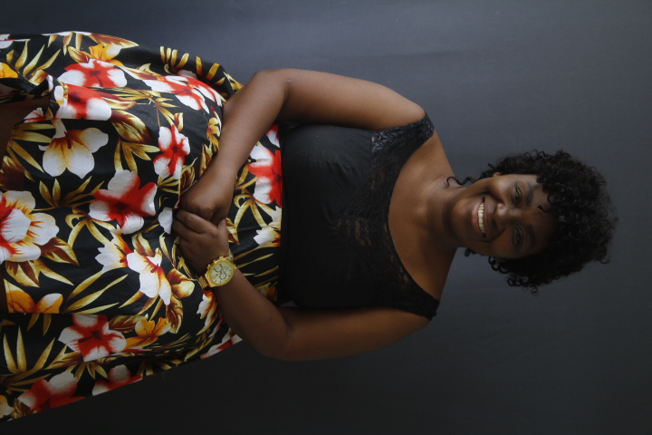
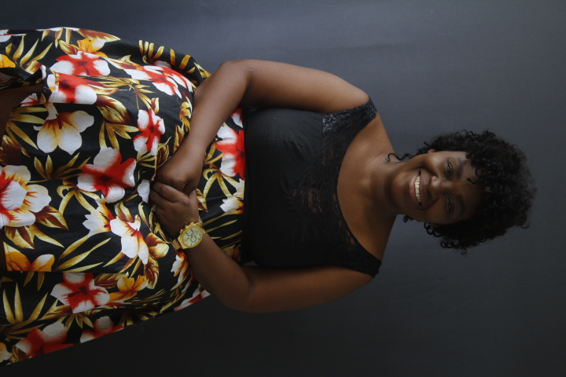

|
 |
Portraits
Birthdays & Events
Family Portraits
|
 |
Very Entertaining feel and I just admire the passion they have for their work! |
He's a creative photographer and he never falls from expectations instead he exceeds them! and the feel of the session is an entirely different thing. |
I remember the family portrait he did for us it was astounding and beautiful especially when we got to print the pictures taken. He's very good at what he does. |
Hadassah Ayomidotun |
Mrs Peace Ayomidotun |
Favor Davies |